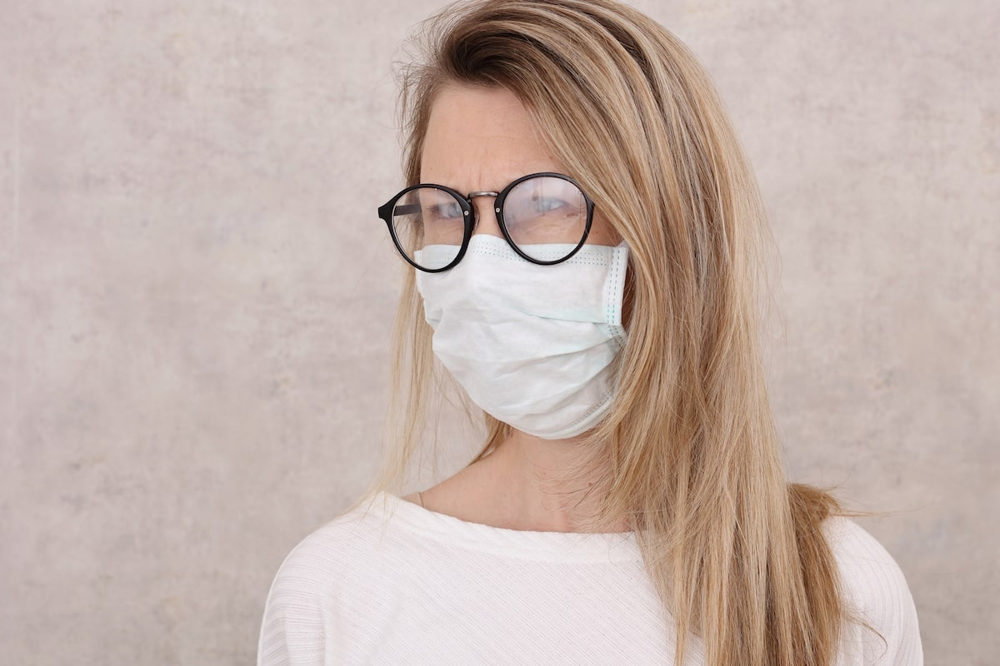

Cómo las gafas pueden ayudarte a protegerte de contraer el COVID-19

Al salir de casa, no olvides tu mascarilla...y tus gafas.Según investigadores de la India, las personas que usan gafas tienen hasta tres veces menos probabilidades de contraer el COVID-19.
Las gafas, por supuesto, aumentan el grado de dificultad para tocarte los ojos, un punto de entrada del virus.Las personas que las usan reducen el riesgo de infección porque se frotan los ojos con menos frecuencia, de acuerdo con los investigadores.
El estudio, publicado por medRxiv —el cual no fue revisado por pares académicos— desarrolló un cuestionario para 304 personas en un hospital del norte de la India el verano pasado, quienes informaron síntomas del COVID.De los 304 pacientes, 223 hombres y 81 mujeres de entre 10 y 80 años, el 19 por ciento dijo que usaba gafas.Los investigadores dijeron que los pacientes se tocaron la cara 23 veces y los ojos tres veces en un promedio por hora.
'Tocarse y frotarse los ojos con las manos contaminadas puede ser una ruta importante de infección', dice el estudio.
Tu mascarilla ya cubre otros dos puntos de entrada del virus, la nariz y la boca.Pero tocar una superficie contaminada y luego tocarte la cara no es la forma más común en que las personas se infectan con el COVID-19.
'Esta forma de infectarse es mucho menos eficaz que a través de las gotitas respiratorias', dijo la Dra. Virginia Bieluch, Jefa de Enfermedades Infecciosas del Hospital de Connecticut Central.'La forma más común de propagación del SARS-CoV-2 (el virus que causa el COVID-19) es de persona a persona, generalmente cuando las personas están a menos de dos metros entre sí.Cuando la persona infectada tose, estornuda, canta, habla o respira, el virus se puede encontrar en gotitas que se transmiten de persona a persona en entornos de contacto cercano'.
Pero incluso en ese escenario, una mascarilla y tal vez incluso tus gafas pueden ayudarte a protegerte.Trata de no tocarte la cara.Y lávate o desinfecta tus manos con frecuencia.
'Una buena higiene de las manos', dijo la Dra. Bieluch, 'puede protegerte del COVID-19, así como de otras infecciones que podrían propagarse más fácilmente por contacto con superficies contaminadas'.
Posted On: 2021-02-23T00:00:00
Content Date: 2021-02-23
Download Date: 2021-04-08
Document ID: L0C049FIG